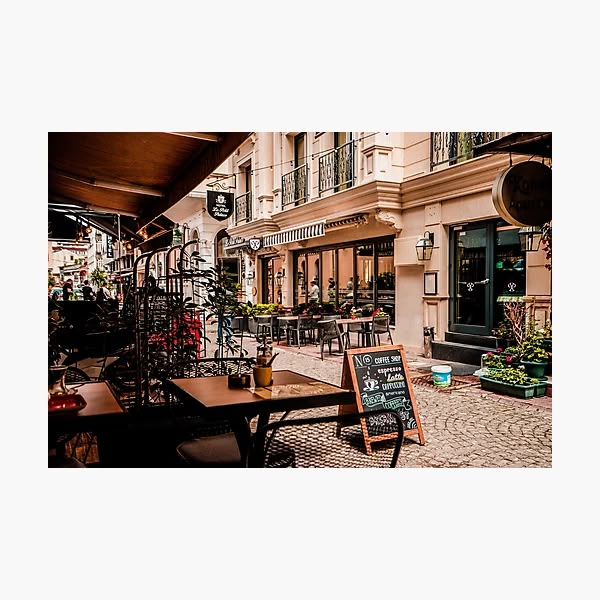

La qualité
Des produits choisis avec attention.
Le Café Baobab est un café-pâtisserie fictif situé à Dakar, au Sénégal.
Notre objectif est de proposer un espace chaleureux où chacun peut savourer un bon café et partager des moments agréables.
Nous accordons une grande importance à la qualité, à l'accueil et aux produits préparés avec soin.

Des produits choisis avec attention.
Un lieu convivial pour tous nos visiteurs.
Des recettes gourmandes et préparées avec soin.